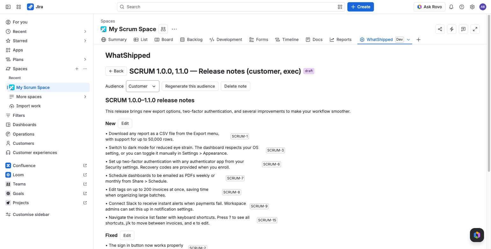
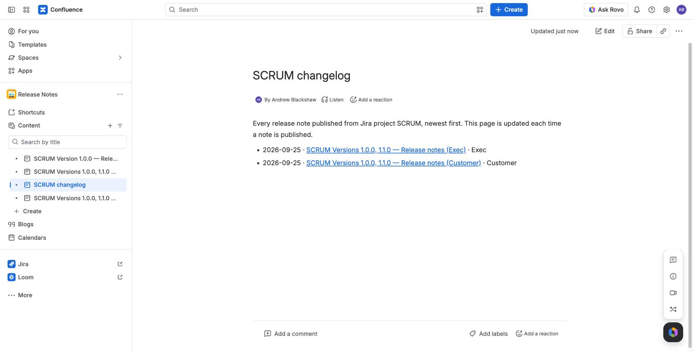
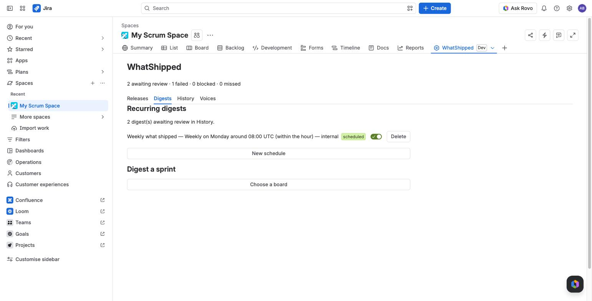

WhatShipped
Release notes and digests for Jira, published to Confluence. Every bullet cites its Jira issue.
WhatShipped is a Forge app for Jira Cloud. You pick one or more versions, a sprint or a JQL scope, once or on a schedule. WhatShipped reads the resolved issues and drafts notes in the voice you set. You review the draft, edit it, and publish it to Confluence yourself.
It runs on Atlassian. Drafting uses Atlassian's Forge LLMs (Claude models). Prompts and issue text do not leave Atlassian, and no personal names are sent to the model.
What it does
- Drafts from real work. Release notes from one or more Jira versions, digests from a sprint, and one-off or scheduled digests from any JQL. No versions yet? Try it on sample data first.
- Cites every bullet. Each bullet shows the issue keys behind it. A checker removes bullets that are uncited, cite the wrong issue, use a banned word or name a person.
- Shows what it left out. An excluded-issue report lists every issue that was skipped and why.
- Writes in your voice. Customer, internal and exec voices come ready to use. You can edit them or add your own.
- Waits for a person. Nothing is published until someone clicks Publish. Pages are created as that person, so normal Confluence permissions apply.
- Keeps a record. One Confluence page per release or digest, under a parent page you choose, plus a changelog index page that lists them all. The History tab lists every note with its status, cost and link.
- Copy-ready text. Slack, Markdown and email HTML versions of any draft, shown ready to select and copy.
- Shows cost in dollars. A monthly drafting budget per site, shown on the project page and the admin page.



Pricing
Free for sites with up to 10 users. Sites with 11 or more users pay $1.00 per user per month, billed by Atlassian. See Budgets and pricing.
Start here
- Getting started
- Release notes and sprint digests
- Review and edit
- Publishing to Confluence
- Scheduled digests
- Voices
Questions: Support or hello@whatshipped.co.uk.